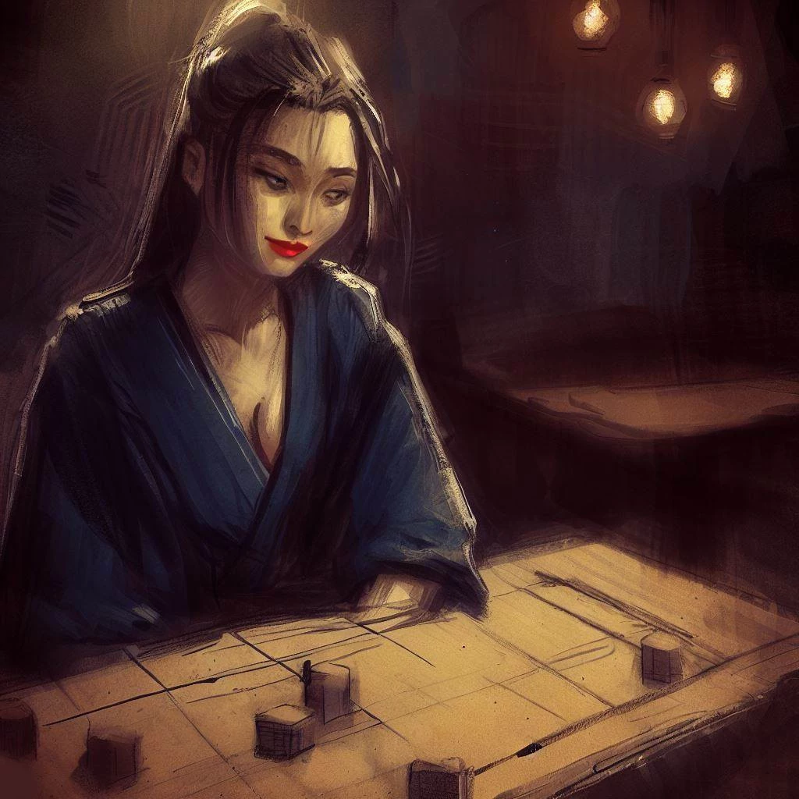
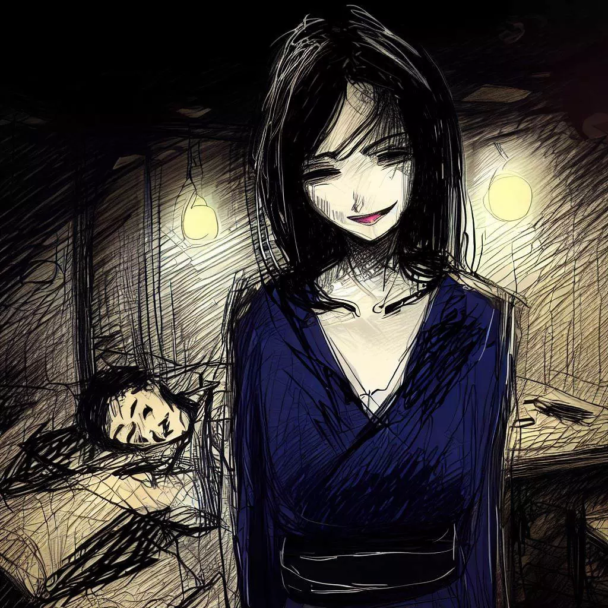

കൊമയോ: ഓഗി ഗെയിമിന്റെ മിസ്റ്റിക്കൽ എക്കോസ്
ഈ കൗതുകകരമായ സ്ട്രാറ്റജി ഗെയിമിലേക്ക് എന്നെ പരിചയപ്പെടുത്തിയതിന് കൊമയോയോട് എന്റെ നന്ദി അറിയിക്കാൻ ഒരു നിമിഷം ഞാൻ ആഗ്രഹിക്കുന്നു. അതിന്റെ ആകർഷണീയതയും നിഗൂഢതയും എന്റെ ജീവിതത്തിൽ ശാശ്വതമായ ഒരു മതിപ്പ് അവശേഷിപ്പിച്ചു. ഞങ്ങളുടെ മീറ്റിംഗിന്റെ കഥയാണ് ഇനിപ്പറയുന്നത്, ഈ വരികളിലൂടെ ഞാൻ പങ്കിടാൻ ആഗ്രഹിച്ച ഒരു വിലപ്പെട്ട ഓർമ്മ.
ഓഫീസ് എസ്കേപ്പ്
എന്റെ ഓഫീസിലെ അണുവിമുക്തമായ അന്തരീക്ഷത്തിൽ ചെലവഴിച്ച ഒരു നീണ്ട ദിവസത്തിനുശേഷം, ഒസാക്കയുടെ സന്ധ്യ എന്നെ ഒരു മോചനം പോലെ സ്വാഗതം ചെയ്തു. കൃത്രിമ എയർ കണ്ടീഷനിംഗ് ഉപേക്ഷിച്ച് ഞാൻ ശാന്തവും ഉന്മേഷദായകവുമായ സായാഹ്ന കാറ്റിൽ മുഴുകി.
പകൽസമയത്തെ ഉന്മാദം, ഭാരമുള്ളത് പോലെ വ്യർഥമായി, പതുക്കെ പതുക്കെ മാഞ്ഞു, പകരം ഒരു രാത്രി ശാന്തത. പതിവ് അദ്ധ്വാനത്താൽ അലങ്കോലപ്പെട്ട എന്റെ ചിന്തകൾ നഗരത്തിന്റെ നക്ഷത്രനിബിഡതയ്ക്കും ശാന്തമായ ശാന്തതയ്ക്കും കീഴിൽ തെളിഞ്ഞുതുടങ്ങി.

നഗരത്തിന്റെ ഇഴചേർന്ന ഇടവഴികളിലൂടെ എന്നെ നയിക്കാൻ ഞാൻ അനുവദിച്ചു. അജ്ഞാതമായ നിഗൂഢതയെ വിജയിപ്പിച്ചുകൊണ്ട് അന്നത്തെ ഏകതാനത ഓരോ തെരുവിന്റെ മൂലയിലും ചിതറിപ്പോകുന്നതായി തോന്നി. അംബരചുംബികളായ കെട്ടിടങ്ങൾക്ക്, അവരുടെ രാത്രി മൂടുപടം, മൃദുവും സ്വാഗതാർഹവുമായ സാന്നിധ്യം സ്വീകരിക്കുന്നതിന് ഭയപ്പെടുത്തുന്ന പ്രഭാവലയം നഷ്ടപ്പെട്ടു.
ഷോപ്പിംഗ് ഇടവഴികളുടെ ചടുലമായ അന്തരീക്ഷം, തെരുവ് റെസ്റ്റോറന്റുകളുടെ ഗന്ധം, രാത്രി വൈകിയുള്ള സംഭാഷണങ്ങളുടെ മന്ദഹാസങ്ങൾ എന്നിവ ആവേശകരമായ നഗര ക്യാൻവാസ് സൃഷ്ടിച്ചു. എന്റെ മനസ്സ്, ക്ഷീണിച്ചെങ്കിലും, ഒരു ബൗദ്ധിക വെല്ലുവിളി തേടി, അന്നത്തെ ആകുലതകളിൽ നിന്ന് വ്യതിചലിച്ചു. അപ്പോഴാണ് ഞാൻ ഒരു വിവേകപൂർണ്ണമായ അടയാളം കണ്ടത്, പ്രശസ്ത ഷോഗി കളിക്കാർക്കുള്ള സങ്കേതമായ റീജൻസി ബാറിന്റെ.
ഈ നിശബ്ദമായ ഇടവഴിയിൽ, ഈ സങ്കേതം എന്നെ വിളിച്ചു, ഒരു കളിയുടെ വാഗ്ദാനം മന്ത്രിച്ചു. ഈ വിവേചനാധികാരത്തിന്റെ പ്രതിധ്വനി എന്നിൽ മുഴങ്ങി, നിഗൂഢതയും ജിജ്ഞാസയും നിറഞ്ഞ ഒരു പ്രലോഭനം വരച്ചു.
പാർട്ടിയുടെ ഗുഹ
മൃദുവായ വെളിച്ചവും ഊഷ്മളമായ അന്തരീക്ഷവും ഉള്ള ബാർ ഡി ലാ റീജൻസ് എനിക്ക് ശാന്തതയുടെ ഒരു സങ്കേതം പ്രദാനം ചെയ്തു. തലമുറകളായി, കളിയുടെ ആരാധകരുടെ സായാഹ്നങ്ങളെ സജീവമാക്കിയ ഷോഗിയുടെ നിരവധി ഗെയിമുകളാൽ ഈ സ്ഥലത്തിന്റെ പ്രശാന്തതയെ വർണ്ണാഭമാക്കി.
ഷോഗിയുടെ ലോകത്തേക്ക് കടക്കുന്നതിന് മുമ്പ് ഞാൻ ഒരു ഗ്ലാസ് സേക്ക് ഓർഡർ ചെയ്തു. പഴയ പാർക്കറ്റ് ഫ്ലോർ എന്റെ കാലിനടിയിൽ മൃദുവായി വിറച്ചു, അതേസമയം എന്റെ കണ്ണുകൾ മൃദുവായ വെളിച്ചവുമായി പൊരുത്തപ്പെട്ടു. ഷോഗി പീസുകളുടെ കിലുക്കം, കളിക്കാരുടെ പിറുപിറുപ്പ്, ആരാധകരുടെ ബഹളം എന്നിവ നിഗൂഢമായ അന്തരീക്ഷം കൂട്ടി. പഴകിയ വിറകിന്റെ സുഗന്ധം, ധൂപവർഗ്ഗവുമായി കലർന്ന, എന്റെ ഇന്ദ്രിയങ്ങളെ ശാന്തമാക്കി, വരാനിരിക്കുന്ന ബൗദ്ധിക യുദ്ധത്തിന് എന്നെ ഒരുക്കി.
എല്ലാ പ്രായത്തിലുമുള്ള കളിക്കാർ അവരുടെ ഗെയിമിൽ മുഴുകി, ഓരോ നീക്കവും പിരിമുറുക്കത്തിന്റെയോ സന്തോഷത്തിന്റെയോ നിരാശയുടെയോ പ്രകടനങ്ങളാൽ അടയാളപ്പെടുത്തി. എന്റെ കൺമുന്നിൽ വിരിഞ്ഞ തന്ത്രങ്ങളുടെയും വിവേകത്തിന്റെയും നിശബ്ദ ബാലെയായിരുന്നു അത്.
ഒറ്റപ്പെട്ട ഒരു മേശയിൽ ഒറ്റയ്ക്ക് ഇരിക്കുന്ന ഒരു സ്ത്രീയിലേക്ക് എന്റെ നോട്ടം പതിഞ്ഞു. അതിന്റെ ശാന്തതയും സൂക്ഷ്മമായ സൌന്ദര്യവും എന്നിൽ ജിജ്ഞാസ ഉണർത്തി. വിവേകവും എന്നാൽ നിശ്ചയദാർഢ്യവുമുള്ള ഒരു ചുവടുവെപ്പിൽ, ഞാൻ സമീപിച്ചു, മാന്യമായ ഒരു പുഞ്ചിരി വരച്ചു, അദ്ദേഹത്തിന് ഒരു ഗെയിം വാഗ്ദാനം ചെയ്തു.

രാത്രി പാഠം
അവന്റെ പ്രതികരണം അവന്റെ മുഖത്തെ പ്രകാശിപ്പിക്കുന്ന ഒരു പുഞ്ചിരിയായിരുന്നു, നിശബ്ദമായ സ്വീകാര്യത.
അപ്രതീക്ഷിതമായ ചാരുതയോടെ, അവൾ മുമ്പ് ഒരു സിൽക്കി തുണിക്കടിയിൽ ഒളിപ്പിച്ച ഗെയിം ബോർഡ് വെളിപ്പെടുത്തി. പരമ്പരാഗത ഷോഗിബാനിൽ നിന്ന് വ്യത്യസ്തമായി ഒരു വശത്ത് എട്ട് ചതുരങ്ങളുള്ള ഒരു കോംപാക്റ്റ് പ്ലേയിംഗ് പ്രതലത്തിൽ എന്റെ കണ്ണുകൾ വീണു. എന്റെ ആശ്ചര്യം പ്രകടിപ്പിക്കുന്നതിന് മുമ്പ്, അപരിചിതൻ എന്നെ പ്രകാശിപ്പിച്ചു, അവളുടെ ശബ്ദം ഒരു ഇളം വേനൽ കാറ്റ് പോലെ വായുവിൽ ഇടകലർന്നു.
"ഇതൊരു ഓഗിയാണ്, രാജാക്കന്മാരുടെ കളി," അവൾ പ്രഖ്യാപിച്ചു. "നമുക്ക് ഓരോരുത്തർക്കും ആരംഭിക്കാൻ 18 കഷണങ്ങൾ ഉണ്ട്." കൗതുകകരമായ ഈ വിശദാംശങ്ങളുടെ വെളിപ്പെടുത്തലിൽ രസകരമായ ഒരു പുഞ്ചിരി അവന്റെ മുഖത്ത് പ്രകാശിച്ചു.

"സിലൗട്ടുകളുടെ ഈ ചെസ്സ്ബോർഡിൽ, ഒരാൾ അതിന്റെ ഗാംഭീര്യത്തിനായി വേറിട്ടുനിൽക്കുന്നു," പ്രത്യേക ചാരുതയുടെ കേന്ദ്രഭാഗത്തേക്ക് വിരൽ ചൂണ്ടിക്കൊണ്ട് അവൾ വ്യക്തമാക്കി. "രാജകുമാരി. ബിഷപ്പിന് യോഗ്യയും നൈറ്റ് എന്ന നിലയിൽ സ്വതന്ത്രയും, അവൾ ഒഗിബാന്റെ മേൽ വാഴുന്നു, ഷോഗിയുടെ ഈ സമകാലിക വകഭേദത്തിന് പ്രണയത്തിന്റെ സ്പർശം നൽകുന്നു."
എന്റെ അത്ഭുതം കണ്ട് അവൾ ചിരിച്ചു. അവന്റെ കണ്ണുകളിൽ ഒരു കുസൃതി ഭാവം തിളങ്ങി, അവന്റെ നിഗൂഢത വർദ്ധിപ്പിച്ചു. അവന്റെ വേഗതയേറിയതും കൃത്യവുമായ വിരലുകൾ ബോർഡിൽ കഷണങ്ങൾ സ്ഥാപിച്ചു, ഞങ്ങളുടെ യുദ്ധക്കളത്തെ സജീവമാക്കി.
അവൾ കഷണങ്ങൾ ക്രമീകരിച്ചപ്പോൾ, ഓഗിബാന്റെ കോണുകളിൽ തിരിവുകൾ ഞാൻ ശ്രദ്ധിച്ചു. "പരമ്പരാഗത കുന്തങ്ങൾ ഈ ഗോപുരങ്ങളാൽ മാറ്റിസ്ഥാപിക്കപ്പെടുന്നു," അവൾ എന്റെ മനസ്സ് വായിക്കുന്നതുപോലെ വിശദീകരിച്ചു.
കഷണങ്ങൾ ഇപ്പോൾ സ്ഥലത്തായിരുന്നു, തികഞ്ഞ യോജിപ്പിൽ. ഞാൻ എന്റെ തന്ത്രം തയ്യാറാക്കിക്കൊണ്ടിരിക്കുമ്പോൾ, മിന്നുന്ന സ്വർണ്ണക്കഷണങ്ങളും എന്റെ നിഗൂഢമായ എതിരാളിയുടെ മിന്നുന്ന നോട്ടവും കൊണ്ട് മെച്ചപ്പെടുത്തിയ ഈ അതുല്യമായ പസിലിലേക്ക് ഞാൻ അപ്രതിരോധ്യമായി ആകർഷിക്കപ്പെട്ടു.
ആത്മാവിന്റെ പരീക്ഷണം
ക്ലോക്കിന്റെ ടിക്ക് സമയം കടന്നുപോകുന്നത് അടയാളപ്പെടുത്തി, അതേസമയം യുദ്ധത്തിന്റെ നിശബ്ദത ഒഗിബാനിലെ കഷണങ്ങൾ സൂക്ഷ്മമായി മാറ്റുന്നതിലൂടെ മാത്രമാണ്. ബിഷപ്പ് നിശ്ചയദാർഢ്യത്തോടെ മുന്നേറി, കുതിരക്കാരൻ ധൈര്യത്തോടെ കുതിച്ചു, രാജകുമാരി യുദ്ധക്കളത്തിൽ ഫലപ്രദമായി ഭരിച്ചു. ഏതാണ്ട് അദൃശ്യമായ ഈ ബാലെ മുറിയിൽ സ്പഷ്ടമായ പിരിമുറുക്കം സൃഷ്ടിച്ചു.
എന്റെ പ്രതിയോഗി, നിഗൂഢനായ, അസ്വാസ്ഥ്യമുണ്ടാക്കുന്ന വൈദഗ്ധ്യത്തോടെ അവന്റെ ഭാഗങ്ങൾ കൈകാര്യം ചെയ്തു. പിടിക്കപ്പെട്ടവർ, ഉന്മൂലനം ചെയ്യപ്പെടുന്നതിൽ നിന്ന് വളരെ അകലെ, യുദ്ധത്തിൽ സമർത്ഥമായി പുനഃസംഘടിപ്പിച്ചു, എന്റെ പിൻനിരകളെ ശക്തിപ്പെടുത്തി. ഓരോ നീക്കവും തന്ത്രങ്ങളുടെ ഒരു പാഠമായി മാറി, ഓരോ ഭാഗവും ശസ്ത്രക്രിയയുടെ കൃത്യതയോടെ നെയ്ത അദൃശ്യ നൂലുകളാൽ ബന്ധിപ്പിച്ചിരിക്കുന്നു.
ഞാൻ ചെറുത്തുനിന്നു, കഠിനമായ നിശ്ചയദാർഢ്യത്തോടെ എന്റെ തോക്കുകൾ കൈകാര്യം ചെയ്തു, സൂക്ഷ്മമായ പ്രതിരോധത്തോടെ അവന്റെ ആക്രമണങ്ങളെ പ്രതിരോധിച്ചു. എന്നിരുന്നാലും, ഓരോ തീരുമാനവും എന്റെ ശക്തി ചോർത്തി, ഓരോ ചലനവും കൂടുതൽ കൂടുതൽ അധ്വാനിച്ചു. എന്റെ കണ്പോളകൾക്ക് ഭാരം ഉണ്ടായിരുന്നു, ക്ഷീണം ഏറ്റെടുക്കാൻ ശ്രമിച്ചു.
ഞാൻ ഉണർന്നിരിക്കാൻ പാടുപെടുമ്പോൾ, ഉറങ്ങുക, ആ വഞ്ചകനായ ശത്രു, വിജയിച്ചു. എന്റെ ശരീരം തളർച്ചയ്ക്ക് വഴങ്ങി, അടയുന്ന കണ്ണുകൾക്ക് മുന്നിൽ ബാർ ലൈറ്റുകൾ നൃത്തം ചെയ്തു. ഞാൻ ശാന്തമായ ഇരുട്ടിലേക്ക് മുങ്ങി, എന്റെ ഓർമ്മയിൽ പതിഞ്ഞ അവസാന ചിത്രം എന്റെ നിഗൂഢമായ എതിരാളിയുടെ വിജയകരമായ പുഞ്ചിരിയാണ്, മഷിപുരണ്ട ആകാശത്ത് വിദൂര ചന്ദ്രനെപ്പോലെ തിളങ്ങി.

പ്രഭാതത്തിന്റെ പ്രതിധ്വനികൾ
എന്റെ ബോധത്തെ മൂടിയ ഇരുട്ട് വിഴുങ്ങി, സമയം ആവിയായത് പോലെ തോന്നി. ഞാൻ മൃദുവായ, നിശബ്ദമായ മൂടൽമഞ്ഞിൽ ഒഴുകിപ്പോയി, എന്റെ മനസ്സ് യാഥാർത്ഥ്യത്തിന്റെ ഉപരിതലത്തിലേക്ക് മടങ്ങാൻ പാടുപെടുന്നു.
ഇരുട്ടിൽ നഷ്ടപ്പെട്ട ഒരു കപ്പൽ പോലെ, ഒടുവിൽ ഞാൻ പ്രഭാത വെളിച്ചത്തിലേക്ക് എന്റെ വഴി കണ്ടെത്തി. പുലർച്ചയുടെ ഇളംവെളിച്ചത്തിൽ കുളിച്ച എന്റെ കണ്ണുകൾ ഏതാണ്ട് തൊട്ടുതീണ്ടാത്ത മുറിയിലേക്ക് തുറന്നു. രാത്രിയിലെ പോരാട്ടത്തിന് അനങ്ങാതെ സാക്ഷിയായി ഒഗിബാൻ ഉണ്ടായിരുന്നു. എന്നിട്ടും എന്റെ എതിരാളിയുടെ സീറ്റ് ശൂന്യമായിരുന്നു, ദിവസത്തിന്റെ വരവോടെ അവന്റെ നിഗൂഢമായ പ്രഭാവലയം ഇല്ലാതായി.
അവന്റെ അഭാവം അന്തരീക്ഷത്തെ ഭാരമുള്ളതും മുറിയെ ശാന്തവുമാക്കുന്ന അനിർവ്വചനീയമായ ശൂന്യത സൃഷ്ടിച്ചു. ഗെയിം ബോർഡിന് സമീപം വൃത്തിയായി മടക്കിവെച്ച ഒരു കടലാസ് എന്റെ കണ്ണിൽ പെട്ടു.കുറച്ച് കരുതൽ വെച്ച് ഞാൻ അതെടുത്തു.
"നന്ദി" എന്ന ലളിതമായ ഒരു വാക്ക് അവിടെ ആലേഖനം ചെയ്തിട്ടുണ്ട്, ഒപ്പം ആദ്യനാമവും - "കൊമയോ". മനോഹരമായ ഒരു കൈയൊപ്പ്, ഈ ക്ഷണികവും എന്നാൽ വളരെ ശ്രദ്ധേയവുമായ ഏറ്റുമുട്ടലിന്റെ അവസാനത്തെ ഓർമ്മയാണ്, ബാർ ഡി ലാ റീജൻസിൽ അവ്യക്തവും ആകർഷകവുമായ കൊമയോയ്ക്കൊപ്പം ഓഗി കളിച്ചു.